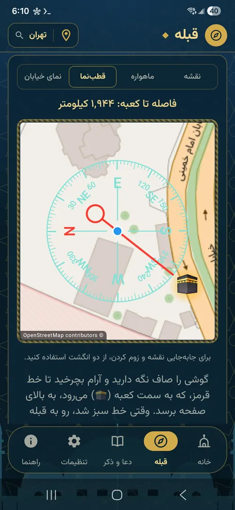
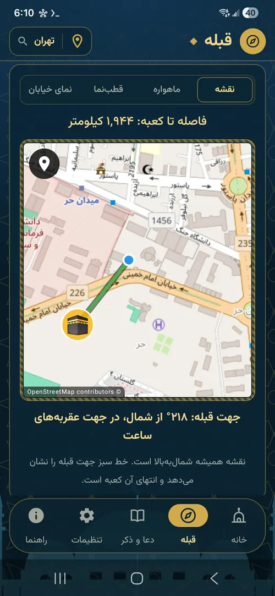
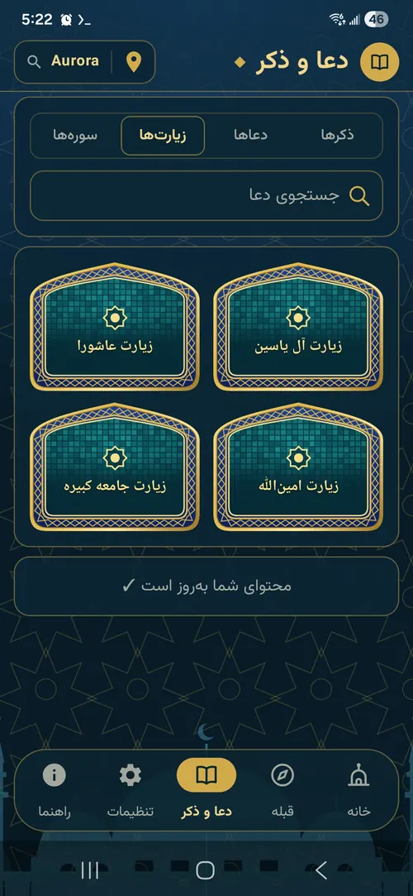
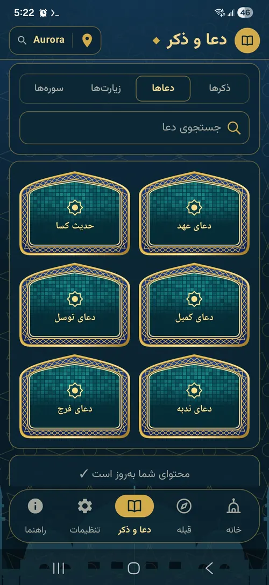
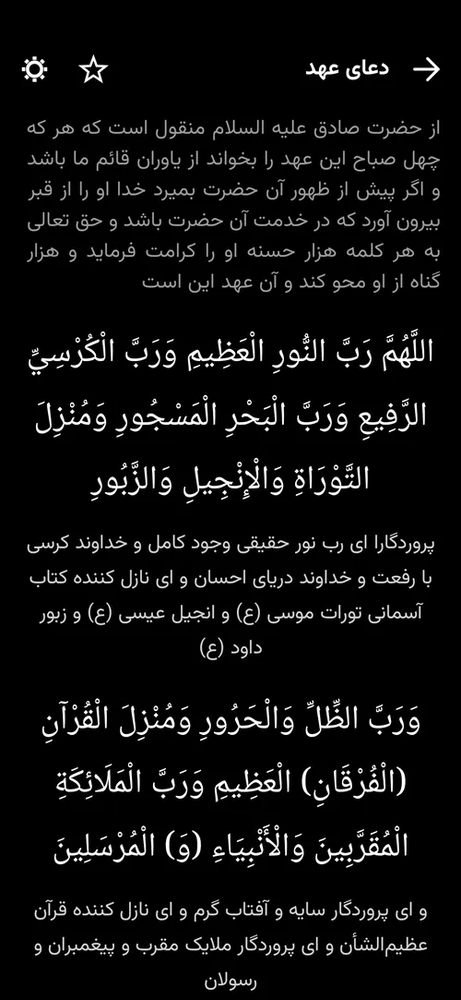

روی گوشی میماند
مکان و تنظیمات (اذان، صدا، زبان، پوسته) فقط روی همین گوشی ذخیره میشوند.
قبلهنما، کتابخانهٔ دعا و زیارت، تسبیح، چهار زبان، پوسته و ساعت، کار بدون اینترنت و احترام به حریم خصوصی شما.

صفحهٔ قبله روی نقشه باز میشود: شمال بالاست و خط سبز به سمت کعبه میرود. فاصلهٔ شما تا کعبه و زاویهٔ قبله از شمال هم نوشته شده است. در قطبنما، گوشی را صاف نگه دارید و آرام بچرخانید تا خط به بالای صفحه برسد و سبز شود.
قطبنما به حسگر گوشی وابسته است. اگر دقیق نبود، گوشی را در هوا به شکل ۸ حرکت دهید.


دعای عهد، کمیل، توسل، ندبه و فرج، زیارت عاشورا، آلیاسین، جامعهٔ کبیره و امینالله، و سورهها و آیتالکرسی. متن عربی همراه ترجمهٔ فارسی، با قلم، اندازه و پوستهٔ خواندن قابل تنظیم.



در «تنظیمات ← عمومی» پوسته و قالب ساعت را انتخاب کنید. روی گزینهها بزنید و نمونه را ببینید.
در تقویم، فهرست ویجت و صفحهٔ ماه، ساعت ۱۲ ساعته برای جا شدن بدون ق.ظ / ب.ظ نمایش داده میشود. زبان برنامه (فارسی، انگلیسی، اردو، عربی) هم از همین بخش انتخاب میشود.
نمونهٔ ظاهر برنامه در هر پوسته
فارسی، انگلیسی، اردو و عربی. زبان برنامه فهرست روشهای محاسبه و زبان دعاهای ویژهٔ رمضان را هم تعیین میکند: فارسی در برنامهٔ فارسی و عربی در بقیهٔ زبانها. در فارسی تاریخ شمسی هم کنار قمری و میلادی هست.
اوقات و اذان به اینترنت وابسته نیستند. فقط چند بخش برای دریافت اطلاعات به آن نیاز دارند.
مکانی که بدون اینترنت انتخاب کنید، پس از وصل شدن اینترنت منطقهٔ زمانی دقیق خود را خودکار میگیرد.
اذان گو حساب کاربری، تبلیغ و ابزار آمارگیری ندارد و هیچ اطلاعاتی از شما به سرور اذان گو فرستاده نمیشود.
مکان و تنظیمات (اذان، صدا، زبان، پوسته) فقط روی همین گوشی ذخیره میشوند.
فقط وقتی برنامه باز است خوانده میشود و هرگز در پسزمینه. میتوانید شهر را خودتان انتخاب کنید و اجازهٔ موقعیت ندهید.
برای نام شهر، منطقهٔ زمانی و وضع هوا فقط مختصات یا متن جستوجو به سرویسهایی مثل OpenStreetMap، Open-Meteo، MET Norway و timeapi.io فرستاده میشود.
صداها، دعاها و متن رویدادهای قمری از azangoo.com دانلود میشوند. برنامه فقط فهرستها و فایلها را میخواهد و چیزی دربارهٔ شما نمیفرستد.
قبلهنما از حسگرهای حرکتی گوشی استفاده میکند و این دادهها فقط روی صفحه به کار میروند. اذان گو از هیچکس، از جمله کودکان، اطلاعاتی جمع نمیکند. با پاک کردن دادههای برنامه یا حذف آن، همهچیز از گوشی پاک میشود.

اوقات برای مکان شما، پخش یا اعلان برای هر اذان، دعا قبل و بعد از اذان، دعاهای رمضان و روشهای محاسبه.
مشاهده ←
ماه همین امشب، بهترین زمان و جهت دیدن هلال و پیشبینی ۲۹ یا ۳۰ روزه بودن ماه.
مشاهده ←
اذان بعدی و شمارش معکوس روی صفحهٔ اصلی گوشی، ویجت ماه و اعلانهای اذان و دعا.
مشاهده ←اذان گو در حال آزمایش بسته در گوگل پلی است. اگر آزمایشکنندهاید، با سه قدم برنامه را نصب کنید و نظرتان را برایمان بفرستید.
ایمیل حساب گوگلی را بنویسید که روی گوشی اندرویدتان وارد شده است (لازم نیست حتماً Gmail باشد). با زدن دکمه، برنامهٔ ایمیل خودتان با پیام آماده باز میشود؛ فقط «ارسال» را بزنید. این صفحه ایمیل شما را جایی ذخیره یا ارسال نمیکند. اگر برنامهٔ ایمیل باز نشد، ایمیل خود را مستقیم برای app@azangoo.com بفرستید.
لینک فقط برای ایمیلهایی کار میکند که در فهرست آزمایشکنندگان باشند.